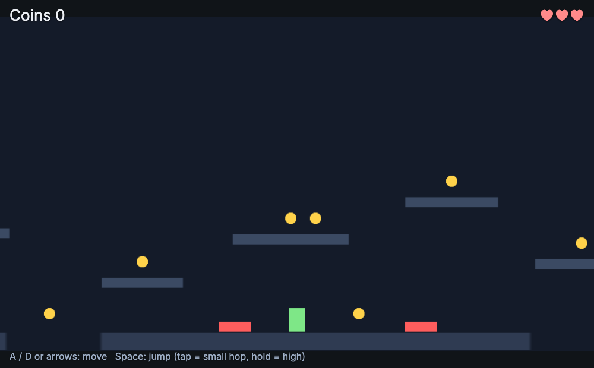
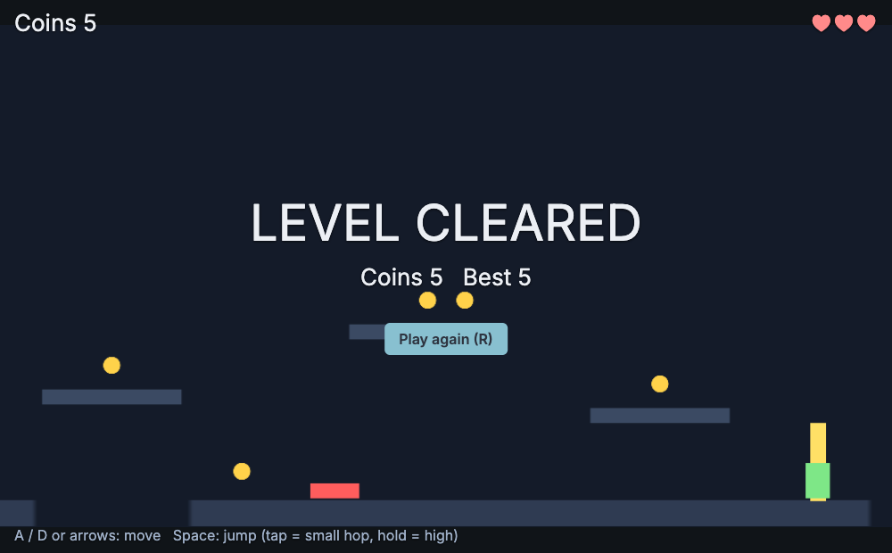

19 · A platformer: Jump Dash
Goal: run and jump across a level with gaps, spikes and coins, with the jump feel of a real platformer. The finished project is examples/jump-dash (nord serve examples/jump-dash).

Setup#
nord.project.json: 960×540, physicsarcadewith gravity[0, 1500, 0](pixels per second², y down), input actionsleft,right,jump(Space / W / Up),restart.- Player:
sprite,rigidbody(dynamic, gravityScale 1),collider, tagplayer, scriptplayer.js. - Ground and platforms:
sprite+colliderand no rigidbody, so they are static. - Spikes, coins, goal: prefabs with a
trigger. Camera: scriptcamera-follow.js.
The jump feel (Unity: the same three tricks)#
import { MonoBehaviour, SerializeField, WaitForSeconds, GameManager } from 'nord';
export default class Player extends MonoBehaviour {
static attributes = SerializeField({ speed: 260, jump: 600, coyote: 0.1, buffer: 0.12 });
Awake() { this.dir = 0; this.coyoteLeft = 0; this.bufferLeft = 0; this.cut = false; this.invulnerable = false; this.spawnPoint = [80, 470]; }
Update(dt) { // input and timers: every frame
this.dir = this.input.axis('left', 'right');
this.bufferLeft = this.input.pressed('jump') ? this.buffer : Math.max(0, this.bufferLeft - dt); // jump buffer
this.coyoteLeft = this.physics.isGrounded(this.entity) ? this.coyote : Math.max(0, this.coyoteLeft - dt); // coyote time
if (this.input.released('jump')) this.cut = true; // variable height
if (this.dir) this.entity.set('sprite', 'flipX', this.dir < 0);
}
FixedUpdate() { // movement: physics step
if (GameManager.instance.state !== 'playing') { this.physics.setVelocity(this.entity, 0, null); return; }
const [, vy] = this.physics.velocity(this.entity);
if (this.bufferLeft > 0 && this.coyoteLeft > 0) {
this.physics.setVelocity(this.entity, this.dir * this.speed, -this.jump); // up is negative y
this.bufferLeft = 0; this.coyoteLeft = 0;
} else {
this.physics.setVelocity(this.entity, this.dir * this.speed, this.cut && vy < 0 ? vy * 0.45 : null);
}
this.cut = false;
}
}| Trick | What it does | Why |
|---|---|---|
| Coyote time | you may jump for 0.1 s after leaving a ledge | forgives late presses; Unity: a timer reset while grounded |
| Jump buffer | a jump pressed 0.12 s before landing still jumps | feels responsive |
| Variable height | releasing the key early cuts the upward speed | a tap = small hop, hold = full jump |
physics.velocity(entity) returns [vx, vy]; setVelocity(e, vx, vy) with null keeps that axis; isGrounded(e) is true when standing on something. Input reading is in Update (edge events live one frame) and physics in FixedUpdate, exactly like Unity.
Hazards, pits and respawn#
// spikes.js: the prefab's trigger touches the player
import { MonoBehaviour } from 'nord';
import Player from './player.js';
export default class Spikes extends MonoBehaviour {
OnTriggerEnter(other) { other.getScript(Player)?.Hurt(); } // only the player object has a Player script
}// player.js (continued)
LateUpdate() { if (this.entity.pos[1] > 700) this.Hurt(true); } // fell into a pit
Hurt(fell = false) {
if (this.invulnerable || GameManager.instance.state !== 'playing') return;
GameManager.instance.LoseLife();
if (GameManager.instance.state !== 'playing') return; // that was the last life
if (fell) { this.physics.teleport(this.entity, this.spawnPoint[0], this.spawnPoint[1]); this.physics.setVelocity(this.entity, 0, 0); }
else this.physics.setVelocity(this.entity, -this.dir * 200, -380); // small hop back
this.StartCoroutine(this.Blink());
}
*Blink() { // 1.2 s of invulnerability with a flicker
this.invulnerable = true;
for (let i = 0; i < 6; i++) { this.entity.set('sprite', 'alpha', 0.25); yield new WaitForSeconds(0.1); this.entity.set('sprite', 'alpha', 1); yield new WaitForSeconds(0.1); }
this.invulnerable = false;
}physics.teleport(e, x, y) moves a body without keeping its speed (assigning entity.pos does the same for a body).
The camera#
// camera-follow.js on the Camera object
lateUpdate(dt) { // lateUpdate: the player has already moved this frame
const p = this.entity.pos, goal = Math.min(this.attrs.maxX, Math.max(this.attrs.minX, this.t.pos[0]));
this.entity.pos = [p[0] + (goal - p[0]) * Math.min(1, this.attrs.smooth * dt), p[1], p[2]];
}minX / maxX keep the view inside the level (half a screen from each end). The library script camera-follow.js adds a dead zone, look-ahead and bounds in both axes.
The goal#
// goal.js
OnTriggerEnter(other) {
if (!other.hasTag('player') || GameManager.instance.state !== 'playing') return;
GameManager.instance.AddScore(5); GameManager.instance.SetState('won'); GameManager.instance.SaveHighScore();
}The HUD listens to the state event and shows the banner:

Variations#
- Moving platforms: a
rigidbodywith modekinematic; set its velocity withphysics.setVelocityand carry the player (libraryphysics-moving-platform.js). - One-way platforms: library
physics-one-way.js. - Double jump: a counter reset when
isGrounded; allow one more-jumpin the air. - Checkpoints: library
checkpoint.js(touching one sets the respawn point). - Enemies that patrol: Enemy AI.